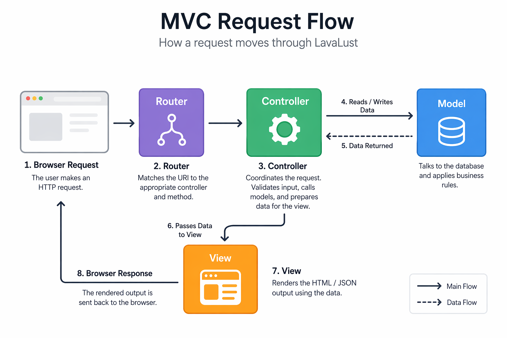

Application Flow
Every request made to a LavaLust application follows the same path through the framework. Understanding this pipeline makes it easier to know where to place your code and how to debug problems when they arise.
Flow Diagram

Step-by-Step Breakdown
Step 1 — Front Controller ( index.php )
Every request, regardless of the URL, is routed through public/index.php.
This single entry point bootstraps the framework — loading configuration,
defining constants, and initialising the core systems — before handing control
to the router. Nothing in the application runs before this file.
Step 2 — Router
The Router inspects the incoming URI and HTTP method and matches them against
your defined routes in app/config/routes.php. It determines which
controller and method should handle the request. If no route matches, a
404 response is returned.
Note
LavaLust supports both automatic controller-based routing and explicit route definitions with closures, parameter constraints, and middleware. See the Routes documentation for the full reference.
Step 3 — Cache Check
Before loading anything else, LavaLust checks whether a cached version of the requested page already exists on disk. If it does, the cached output is sent directly to the browser and execution stops — the controller, model, and view are never loaded. This makes cached pages extremely fast.
Tip
Page caching is most effective for public pages that do not change per user (home pages, article pages, product listings). It should not be used for pages that display user-specific or session-dependent content.
Step 4 — Security Layer
If no cache file is found, the security layer runs before the controller is loaded. This step:
Sanitises incoming
GET,POST, and cookie dataValidates the CSRF token on state-changing requests (if CSRF protection is enabled)
Checks URI characters against the permitted character whitelist
Applies any configured XSS filtering
Only after this step passes does execution continue to the controller.
Step 5 — Controller
The matched controller method is instantiated and called. The controller is responsible for:
Reading validated request data via
$this->requestLoading and calling model methods to fetch or mutate data
Loading any libraries or helpers needed for the request
Passing data to a view or building a direct response
Step 6 — Model
If the controller needs data, it calls the appropriate model. The model communicates with the database using the Query Builder and returns the result to the controller as an array. The controller never queries the database directly.
Step 7 — View
The controller passes data to a view file, which renders the final HTML (or other output format). The view has no knowledge of where the data came from — it simply receives variables and uses them for presentation.
Step 8 — Response and Cache Write
The rendered output is sent to the browser as the HTTP response. If page caching is enabled for this route, the output is also written to disk so that the next identical request can be served from the cache at Step 3, skipping all subsequent steps entirely.
Key Takeaways
Concept |
What it means in practice |
|---|---|
Single entry point |
All requests go through |
Cache exits early |
Cached responses bypass the controller, model, and view entirely — keep cache disabled on personalised or authenticated pages |
Security runs before your code |
Input is filtered before your controller ever sees it, but you should still validate and sanitise data explicitly in your application logic |
Controller is the coordinator |
It should read input, delegate to models, and pass results to views — not contain queries or HTML markup itself |
Views are the last step |
By the time a view runs, all data is already prepared — views must not load models or make database calls |